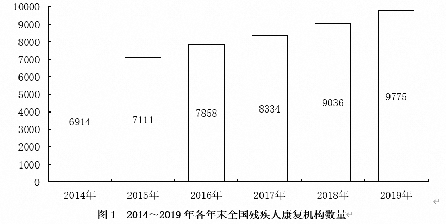
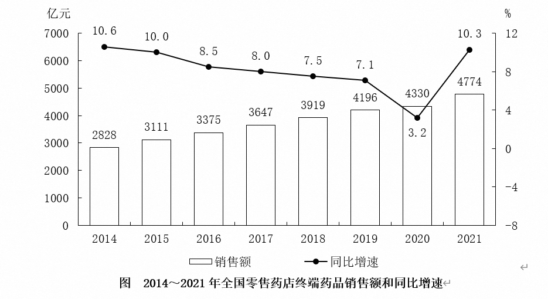
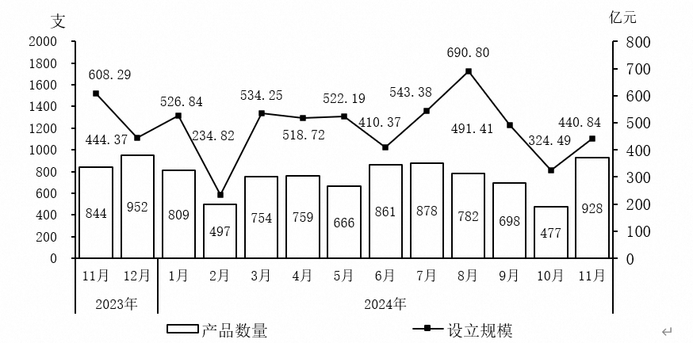
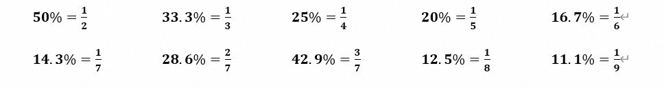
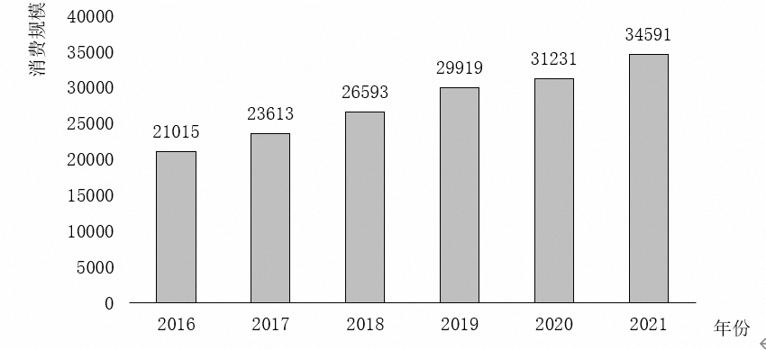
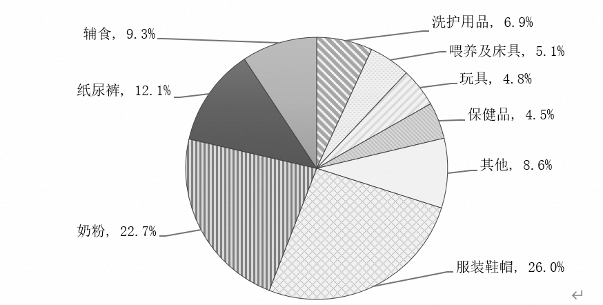
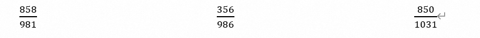
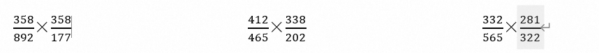

第一章 实用速算技巧
1.1 加法技巧–尾数法、高位叠加法
1.1.1 尾数法
在多个数字精确求和或求差时，从“尾数”处入手，为保证精确与速度，一般可观察两位。

【例1】
求出2014～2017年全国残疾人康复机构数量之和：
A．29576 B．30217
C．33418 D．36439
【例2】（2019年安徽特岗）
2011年，商标局共受理商标注册申请1416785件，同比增长32.1%，再创历史新高，连续十年位居世界第一。其中商标注册网上申请达804926件。
外国来华申请量（包括马德里商标国际注册领土延伸申请）排名前10位的国家或地区分别是美国、日本、韩国、英国、德国、英属维尔京群岛、法国、意大利、瑞士、澳大利亚，申请量分别为26060件、19715件、6318件、5588件、3796件、3461件、3243件、2865件、2124件、2085件，这10个国家或地区的申请量之和占外国在华申请总数的78.5%。
问题：2011年，外国来华商标申请量排名前10位的国家或地区的申请量之和为：
A．75255件 B．75525件
C．76215件 D．79585件
1.1.2 高位叠加
和我们记忆中的列竖式做加法顺序正相反，高位叠加是从高位加起，抓住问题的主要矛盾。非精确求和或没有选项可以参考时，可以选用高位叠加法。

图 2014～2021年全国零售药店终端药品销售额和同比增速
【例1】
求出十三五时期全国零售药店终端药品销售额：
【例2】（2025年湖北选调）

图 2023年11月～2024年11月证券期货经营机构资管产品月度备案数量及规模趋势
问题：2024年上半年，证券期货经营机构共备案私募资管产品:
A．不到4400支 B．4400～4500支之间
C．4500～4600支之间 D．超过4600支
1.2 减法技巧–分段法
将多位数（三位、四位）的减法分成两段，尽可能保证不用借位；若无法保证不借位，可以用负数代替借位。
【例题】
512－481 532－328 721－688
745－372 938－776 822－484
1723－494 245－177 622－478
【例1】（2023年国考）
表 2021年2～12月各月末固定互联网宽带接入用户数
| 万户 | ||||
|---|---|---|---|---|
| 接入用户 | 其中： xDSL用户 | 光纤用户 | 其中： 100Mbps速率以上用户 | |
| 2月 | 49222 | 296 | 46274 | 44516 |
| 3月 | 49726 | 295 | 46707 | 45072 |
| 4月 | 50061 | 293 | 47053 | 45517 |
| 5月 | 50516 | 292 | 47515 | 46104 |
| 6月 | 50961 | 290 | 47968 | 46649 |
| 7月 | 51374 | 290 | 48416 | 47173 |
| 8月 | 51865 | 290 | 48921 | 47710 |
| 9月 | 52629 | 291 | 49643 | 48450 |
| 10月 | 53146 | 290 | 50077 | 49026 |
| 11月 | 53540 | 288 | 50466 | 49557 |
| 12月 | 53579 | 283 | 50551 | 49848 |
问题：2021年下半年，我国固定互联网宽带接入用户中，光纤用户数增量超过500万户的月份有几个：
A．2 B．3
C．4 D．5
【例2】（2022年联考）
表 2011～2020年全国城市生活垃圾无害化处理状况
| 总清运量 （万吨） | 无害化处理场 （座） | 无害化处理能力 （万吨/日） | 无害化处理量 （万吨） | |
|---|---|---|---|---|
| 2011年 | 16395 | 677 | 40.91 | 13090 |
| 2012年 | 17081 | 701 | 44.63 | 14490 |
| 2013年 | 17239 | 765 | 49.23 | 15394 |
| 2014年 | 17860 | 818 | 53.35 | 16394 |
| 2015年 | 19142 | 890 | 57.69 | 18013 |
| 2016年 | 20362 | 940 | 62.14 | 19674 |
| 2017年 | 21521 | 1013 | 67.99 | 21034 |
| 2018年 | 22802 | 1091 | 76.62 | 22565 |
| 2019年 | 24206 | 1183 | 86.99 | 24013 |
| 2020年 | 23512 | 1287 | 96.35 | 23452 |
问题：2012～2020年间，全国城市生活垃圾无害化处理量同比增长超过1200万吨的年份有几个：
A．4 B．5
C．6 D．7
1.3 乘法技巧–小分互换法、拆分法、放缩法
1.3.1 小分互换
若乘法中有某个乘数可以近似的转化为某个常见分数，我们可以将多位数乘法转化为简单除法计算;
一个数字乘以5、25、125，可转化为除2、4、8.
需记忆的常用小数如下：

【例题】
784×25% 632×12.5% 20%×455
727×16.7% 981×33.3% 50%×472
1.3.2 乘法拆分
若乘法中有某个乘数为百分数且能拆成两个简单数值（50%、10%、5%等），我们可以将该百分数拆成两部分相乘，要擅用“1%”（“一个包子”）。
常用的小数拆分如下：
45%＝50%－5% 55%＝50%＋5% 15%＝10%＋5%
60%＝50%＋10% 95%＝1－5% 90%＝1－10%
及所有50%、100%附近的数等。
【例题】
382×55% 492×48% 936×45%
592×97% 1228×95% 766×103%
【例1】
62851×97.2%＝？
A．60671 B．61091
C．61692 D．62052
【例2】
42815×93.1%＝？
A．41481 B．40819
C．39861 D．39012
【例3】（2023年青海）

图1 中国母婴商品消费规模（单位：亿元）

问题：2021年，我国消费最多的母婴商品金额约为：
A．9638亿元 B．8994亿元
C．7852亿元 D．4186亿元
1.3.3 乘法放缩
若乘法中有某个乘数可以拆分为整百×（1）时，可使用乘法结果放缩简化运算。
【例题】
212×332 315×571 428×325
782×617 865×408 568×330
1.4 除法技巧–拆分法、放缩法
1.4.1 拆分法
拆分法是对直除的“优化”，可借助选项“猜”出答案，尤其适合分子位数小于等于分母的除法计算。
拆分法具体应用：
一、如果分子在分母的50%附近，先拆出50%；
二、如果分数大小约等于1（分子分母相差不大），可先拆出100%；
三、如果分子很小，可根据实际情况拆出10%或5%或1%；
【例1】50%左右
250÷484 333÷642 488÷912
143÷247 200÷384 121÷292
【例2】100%左右
450÷484 633÷642 888÷912
252÷247 360÷344 261÷292
【例3】1%-20%左右
50÷484 33÷642 88÷912
36÷242 30÷384 41÷292
【例4】实战演练
47598÷89894＝？
A．54.9% B．56.5%
C．52.9% D．51.2%
43256÷357951＝？
A．8.5% B．10.9%
C．12.1% D．13.6%
32503÷33546＝？
A．94.1% B．95.5%
C．96.9% D．98.5%
1.4.2 除法放缩
除法放缩的原理：分子分母同时扩大或缩小相同的幅度，分式不变。
除法放缩的适用范围：
①分母接近整百；
②多个数乘除中分子分母接近整数倍。
【例1】

